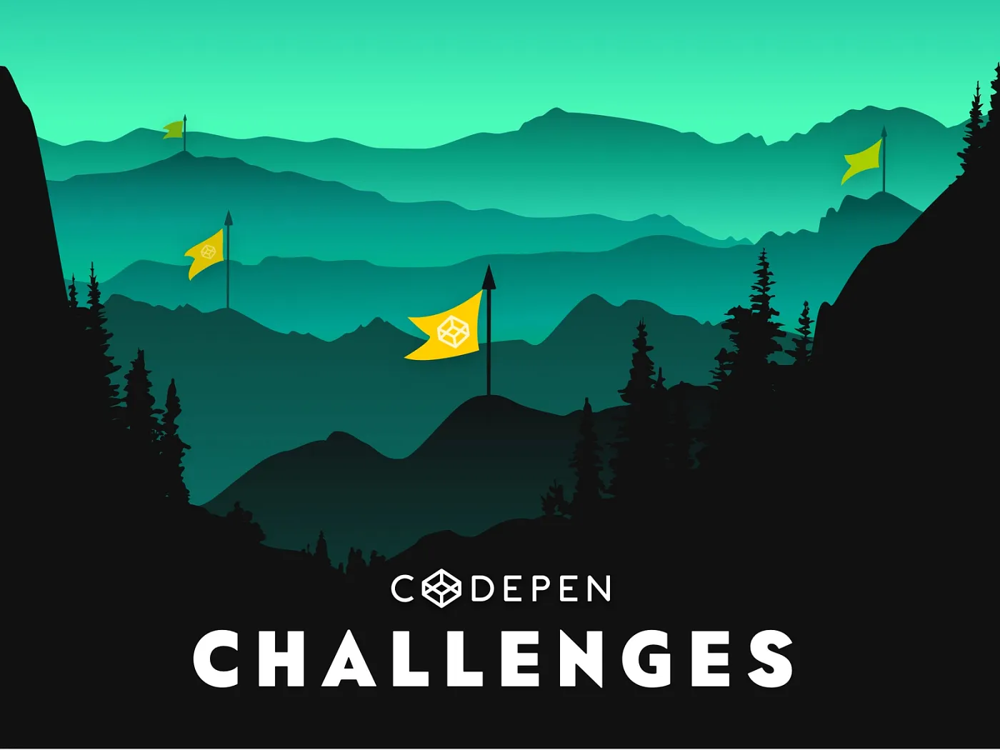
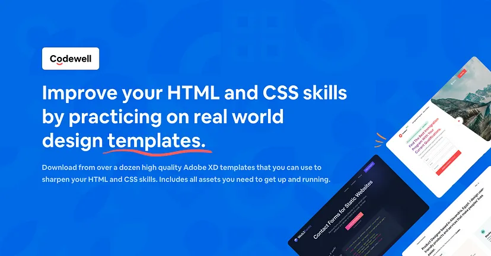
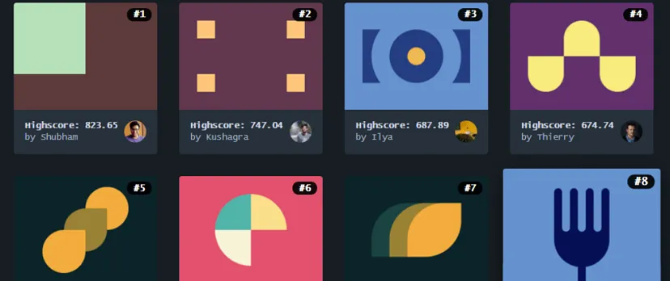
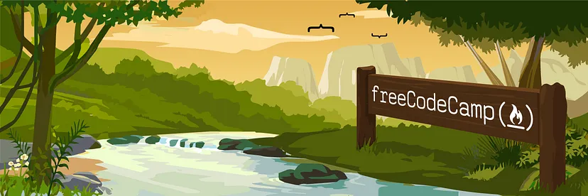
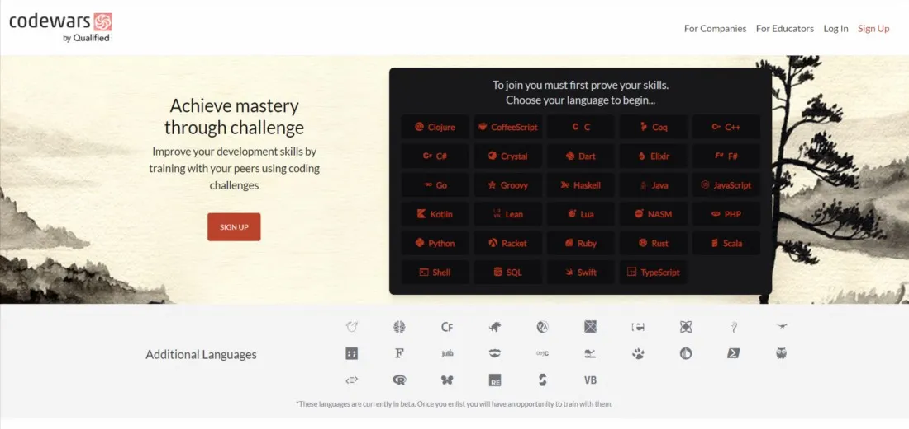
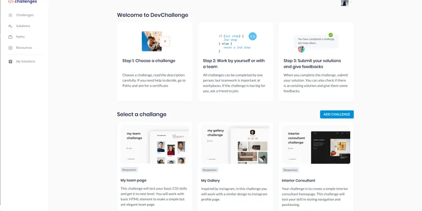
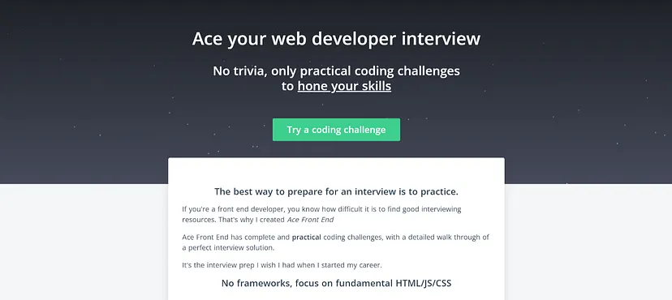
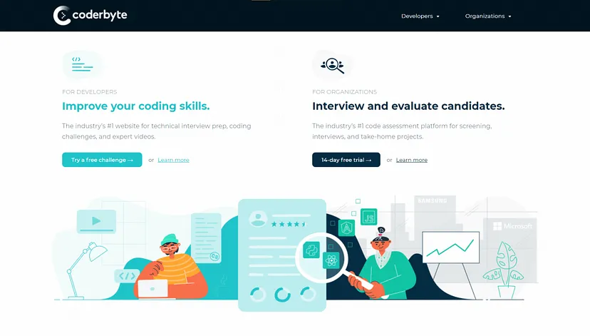

It’s a 30-day vanilla JS coding challenge. During these 30 days more or less — you can binge the tutorials in netflix style to take it as slow as you like because you’ll get an instant and free access to all the videos.

Improve your front-end coding skills by solving real-world HTML, CSS and JavaScript challenges whilst working to professional designs.

Challenges are fun opportunities for leveling up your skills by building things. Each week, you’ll get a new prompt surrounding a monthly theme to riff on.
Improve your HTML and CSS skills by practicing on real design templates. With Codewell, you can browse high quality Figma templates that you can use to sharpen your HTML and CSS skills.
Use your CSS skills to replicate targets with smallest possible code. Feel free to check out the target & put your CSS skills to test.
Over 7000+ tutorials and tons of challenges to complete along the way to test what you’ve learnt. And that’s too for free!
As a front-end developer, Codewars is a good platform to practice JavaScript. It is a great platform for developing your problem-solving skills.!
DevChallenges is a community and a platform for anyone who wants to become a Software Engineer by building real-life projects and solving practical tasks. DevChallenges is built with the goal of enabling you to build an outstanding portfolio.
The Ace Front End program is designed to introduce you to the world of coding and give you a comprehensive overview of how to design an effective interview solution.
A web application designed to assist you in practicing programming and improving coding skills, Coderbyte. Their coding challenges and web development courses can help you prepare for upcoming interviews.
